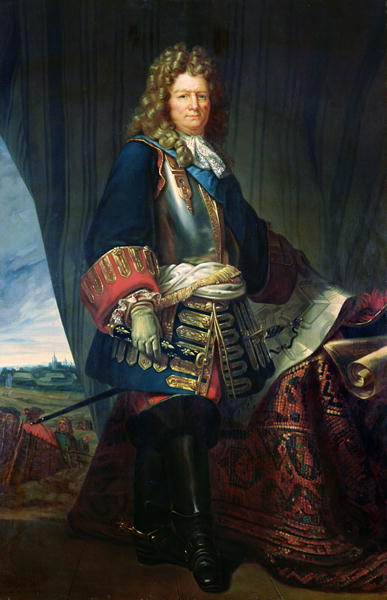
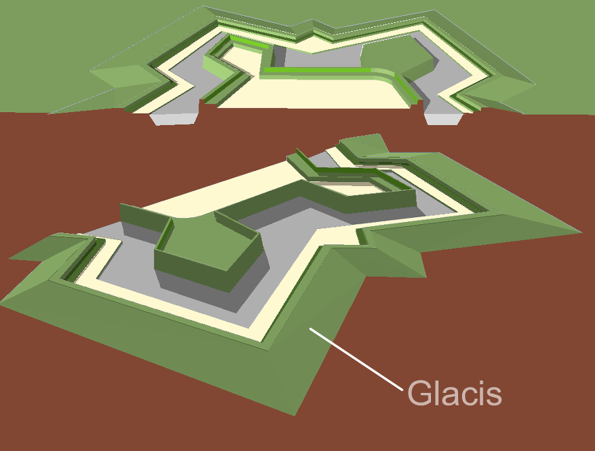
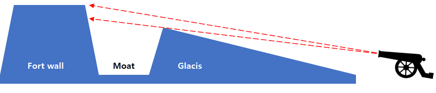
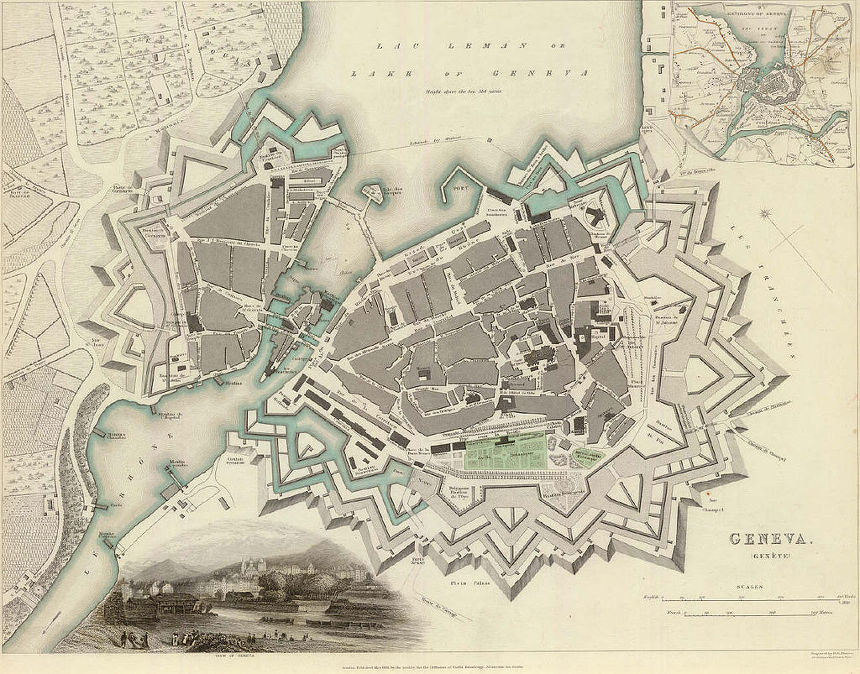
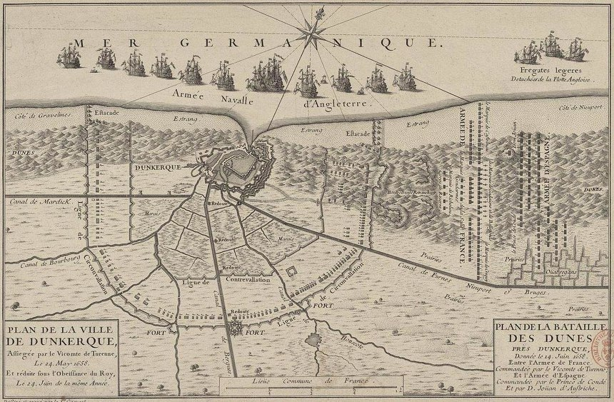

나폴레옹 시대의 병참부 이야기 (중편)
게시: 2019-02-11T06:30:00+09:00

(흔히 단순한 축성 전문가로만 알려져 있지만, 이 분으로 인해 유럽에서는 17세기부터 2백년간 요새와 포병, 병참, 병력 운영 등 모든 전쟁 양상이 완전히 뒤바뀌었습니다. 그야말로 위풍당당 보방(Sébastien Le Prestre de Vauban) 백작입니다.)
17세기에 들어서면서 프랑스를 중심으로 유럽 각지의 군사 요충지에 일찌기 보지 못했던 묘한 건축물들이 들어서기 시작합니다. 이로 인해 당대 유럽의 군사 작전 행태에 상당한 변화가 일어나게 됩니다. 바로 보방(Vauban)식 요새의 등장이었습니다. 대포의 발명과 함께 무용지물이 되었던 중세식의 높고 웅장한 성벽과는 달리, 보방식 요새는 낮고 두꺼운 벽으로 된 보루(redoubt)와 쐐기 모양의 옹벽(ravelin), 그리고 대포알을 튕겨내기 위한 경사방벽(glacis) 등을 갖춘, 한마디로 방탄벽을 갖춘 요새였습니다. 이런 별모양의 보방식 요새는 17세기 프랑스의 공병 전문가 보방(Sebastien Le Prestre de Vauban, Seigneur de Vauban)에 의해 획기적으로 개선된 뒤 17세기에 걸쳐 유럽 곳곳으로 퍼져나가면서, 군사 작전의 형태가 군사작전의 형태가 대규모 회전보다는 요새를 둘러싼 포위전으로 변질되는 결과를 낳게 되었습니다.

(경사방벽이란 요새방벽을 둘러싼 해자 바로 바깥쪽에 흙으로 두툼하게 쌓아놓은 방벽이었습니다. 포위군이 요새방벽을 무너뜨리기 위해 쏘아대는 포탄 상당수가 이 경사방벽에 튕겨져 나갔습니다.)

(경사방벽이 포위군의 포병들에게 얼마나 미치고 환장할 방어수단인지 보여주는 구조도입니다. 포위군은 요새방벽을 대포알로 때려 무너뜨리길 원하겠지만, 요새방벽은 깊은 해자와 경사방벽으로 인해 공성포에게는 지극히 작은 표적이 되었고, 맞추기가 굉장히 어려웠습니다. 반면에 방벽 위의 수비군은 적군을 훤히 내려다볼 수 있었고요.)

(레만 Lehman 호수 서쪽 끝부분에 위치한 제네바 Geneva를 둘러싼 보방식 방벽의 모습입니다. 이 지도는 1841년의 모습인데, 지금 저 방벽은 헐리고 없습니다.)
전쟁의 형태가 장기간의 포위전이 되어버리자, 당장 문제가 발생한 것이 군대의 식량 조달이었습니다. 아무리 종군상인들이 부지런히 왔다갔다 한다고 해도, 종군 상인 몇몇에게 전부대가 먹을 밀가루와 빵을 의존하는 것은 불가능했고 또 너무 비쌌습니다. 결국 군량 중 상당부분은 주변 농가들로부터 징발을 하거나 약탈을 통해 구해야 했는데, 수만 명의 포위군이 적 요새를 둘러싸고 근처에 몇 달 버티면 그 주변 일대의 식량은 씨가 말라버릴 수 밖에 없었습니다. 식량을 더 구할 수 없으면 포위를 유지할 수 없었고, 이는 곧 포위전의 패배를 뜻했습니다.
이런 문제를 해결하기 위해 군제를 개편한 나라는 역시 유럽의 육군 강국이자 가장 많은 침공 전쟁을 치른 프랑스였습니다. 프랑스는 가장 많은 보방식 요새를 구축한 나라이기도 하지만, 적 요새를 가장 많이 공격한 나라이기도 했습니다. 17세기 중반에 삼총사에 나오는 유명한 추기경이자 정치인인 마자랭(Jules Mazarin)의 부하인 국방장관 르 틀리에(Michel Le Tellier)는 근대 유럽 세계 거의 최초로 국가 차원에서 병참 업무 개혁을 손보기 시작했니다. 기존에는 각 연대장들의 재량에 따라 그때그때 제멋대로 맺어졌던 종군상인들과의 계약을 표준화하여 좀더 체계적이고 원활하게 보급이 이루어지도록 했고, 여태까지 하찮고 천하게 여기던 수송 업무에도 신경을 써서 짐수레 부대도 상설화했습니다. 무엇보다 전투 지역 인근에 보급창을 세워 군량을 미리 축적하는 노력을 시작했습니다.
(이 분이 르 틀리에입니다. 이 분은 리셜리외의 뒤를 이은 추기경+재상인 마자랭에게 평생 충성했고, 또 루이 14세를 꼬드겨 프랑스 내의 신교도인 위그노들을 탄압하는데도 앞장섰습니다. 덕분에 프랑스의 국가 경쟁력이 크게 떨어지는데 꽤 중요한 역할을 했지요. 르 틀리에 본인은 끝까지 잘 살았고, 아들인 루부아 Louvois도 아버지의 뒤를 이어 프랑스 국방장관직에 올랐습니다.)

(르 틀리에의 병참 개혁이 큰 도움이 되었던 1658년 덩케르크 Dinkirk 포위 작전도입니다. 영국과 프랑스가 손을 잡고 스페인 및 영국 왕당파 연합군이 점거한 덩케르크를 포위 공격한 전투입니다. 결국 영불 연합군이 덩케르크를 함락시켰습니다.)
물론 이런 개선은 여전히 미흡했고, 전선의 많은 부대들은 계속 약탈과 현지 징발에 의존했으며, 덕분에 프랑스군은 여전히 배가 고팠습니다. 하지만 이런 경험이 쌓이고 쌓여 프랑스군의 병참 능력은 유럽 어느 나라보다 더 우수해졌고, 이는 결국 나폴레옹의 기동전과 맞물려 나폴레옹이 유럽을 제패하는데 큰 힘이 됩니다. 나폴레옹 기동전의 근원은 식량의 현지 조달이었는데, 이는 유능한 병참부 없이는 불가능한 일이었습니다.
1809년 제5차 대불동맹전쟁 때는 오스트리아군도 프랑스군의 흉내를 내어 식량의 현지 조달을 최우선 과제로 삼았습니다만, 그 결과는 신통치 않았습니다. 오스트리아 병참부의 역량이 프랑스군보다 훨씬 뒤떨어졌던 것이지요. '현지 조달'이라는 것이 꼭 약탈만을 뜻하지는 않습니다. 무자비한 약탈로 당장 먹을 것을 손에 쥔 굶주린 병사들이 자기들 몇몇끼리만 배부르게 먹고 마시는 것을 막는 것은 쉬운 일이 아니었습니다. 무엇보다 그렇게 수집한 식량을 재빠르게 계량하고 보관하고 수송하여 넓은 곳에 분산된 아군 병력에게 효율적이고 공평하게 분배하는 것은 정말 어려운 일이었습니다. 그리고 그런 자질구레한 실무 능력은 하루 아침에 이루어지는 것이 아니었습니다. 설마 나폴레옹이 말단 병참부 서기들을 모아놓고 그렇게 밀가루와 와인 항아리를 다루는 법을 일일이 가르쳤겠습니까 ? 프랑스군 병참부는 르 틀리에 시절부터 근 100년 넘게 다른 나라 군대와는 비교가 안될 정도로 실무 능력을 쌓아왔었고, 나폴레옹이 그 혜택을 입은 것이라고 할 수 있습니다.
한편, 바다 건너 영국은 나폴레옹 시대 100년 전부터 유럽 대륙은 물론 아프리카와 아시아, 북미와 카리브해 등 전세계를 지역구로 활발한 침략 전쟁과 식민지 운영을 하고 있었습니다. 따라서 원거리에 걸친 병력과 장비, 식량과 탄약의 수송에 있어 굉장히 전문화된 체계를 갖추고 있을 것이라고 생각됩니다. 그러나 해군에서는 그럴지 몰라도, 육군에서는 깜짝 놀랄 정도로 그런 병참 업무의 체계화가 보잘 것 없었습니다. 오죽 했으면 1808년 포르투갈에 상륙한 웰링턴이 상륙 1주일 후 국방부 장관인 캐슬레이 경(Lord Castlereagh)에게 보낸 편지에서 가장 불평한 것이 병참 업무에 대한 것이었습니다.
"진격시 제가 가장 어려움을 겪는 부분은 바로 병참부(Commissariat)의 체계화입니다. 이 부서는 장관님의 심각한 관심을 필요로 합니다."
그런데 이 병참부는 웰링턴의 사령부에 있던 다른 지원 부서들, 즉 의무부(Medical Department), 조달부(Purveyor's Department, 이름과는 달리 병원기자재와 사망자 처리를 담당), 경리부(Paymaster-General), 자재부(Storekeeper-General, 역시 이름과는 달리 주로 장비와 텐트 등의 수송을 담당) 등과 함께 민간인으로 구성된 부서였습니다. 다만, 병참부는 다른 지원 부서들과는 확실히 다른 점이 있었습니다. 이들 부서 중에서 유일하게 그 부서장이 런던의 재무부(His Majesty’s Treasury)로부터 직접 명령을 받았던 것입니다.
이런 차이는 웰링턴이 보낸 편지에 나오는 것과 같이, 모든 지원 부서 중에서 병참부의 업무가 군사 작전의 성패에 가장 중요했기 때문이었습니다.
"리스본으로 선적된 건빵 한 개가 최전선의 병사의 입 속으로 들어갈 때까지의 전체 과정을 상세히 보살피고 추적하지 못한다면 제대로 수행될 수 있는 군사 작전은 하나도 없습니다."
워털루 전투에서 웰링턴이 나폴레옹을 격파하기는 했지만, 누가 봐도 이 둘의 군사적 역량 차이는 누가 봐도 나폴레옹이 두 단계는 더 높다고 할 수 있습니다. 그런데도 웰링턴이 이베리아 반도에서 프랑스군을 격파하고 밀어낼 수 있었던 것은 웰링턴이 '화려하지는 않아도 실속있는' 스타일의 지휘관이기 때문이었습니다. 무엇보다, 웰링턴이 이렇게 병참부의 중요성을 확실하게 인식하고 있었다는 점에서 그랬습니다. 원래 웰링턴이 병참 업무가 주특기였기 떄문에 그랬을까요 ? 웰링턴은 이베리아 반도에 상륙하기 전에는 인도와 덴마크에서 활약한 적이 있습니다만, 그때도 이렇게 병참부를 중시했을까요 ? 전혀 그렇지 않았습니다. 웰링턴이 뜬금없이 병참부의 열성팬이 된 것은 이베리아 반도의 특수성 때문이었습니다. 과연 그 특수성이라는 것은 무엇이었을까요 ?
(이번에는 좀 너무 짧군요. 분량 조절 실패로 병참부 이야기는 3부에 걸쳐 늘어지겠습니다. 죄송합니다 T T)
Source : The Duke Of Wellington And The Supply System During The Peninsular War, by Major Troy T. Kirby
Tracing the Biscuit: The British Commissariat in tite Peninsular War, by William Reid
On The Road With Wellington, by August Ludolf Friedrich Schaumann
https://de.wikipedia.org/wiki/August_Friedrich_Ludolph_Schaumann
https://www.britannica.com/topic/logistics-military/Historical-development
https://en.wikipedia.org/wiki/Military_logistics
https://en.wikipedia.org/wiki/Bastion_fort
https://en.wikipedia.org/wiki/Glacis